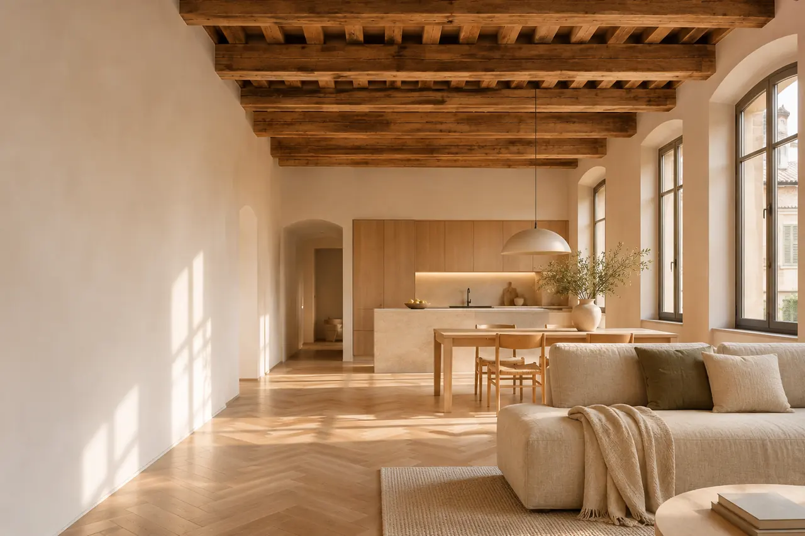
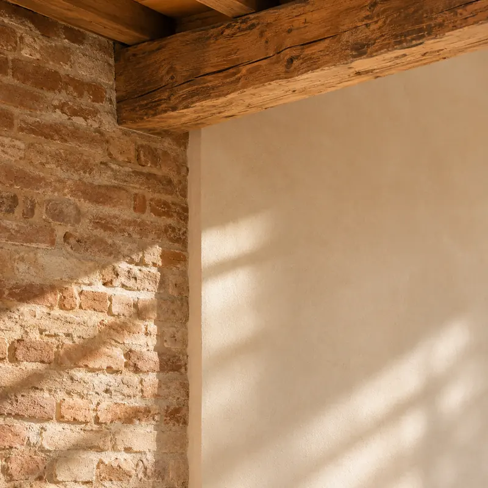

Ristrutturazioni a Mantova
Trasformo la casa che hai in quella che ti serve. Seguo il progetto, le pratiche e il cantiere, a Mantova e in provincia.
Primo incontro conoscitivo gratuito e senza impegno.
Un architetto per ristrutturare casa
Una ristrutturazione riuscita si decide prima di aprire il cantiere. Rilievo, distribuzione degli spazi, impianti, materiali e permessi: quando sono chiari sulla carta, in cantiere ci sono meno varianti, meno ritardi e meno sorprese sul conto finale.
Lavoro su appartamenti, case indipendenti ed edifici storici, dove servono attenzione ai vincoli e rispetto di quello che c’è già. Ti aiuto a capire cosa conviene tenere, cosa cambiare e in che ordine farlo.

Cosa posso fare per te
Ristrutturazione completa
Ripenso distribuzione, impianti e finiture di tutta la casa, dal rilievo dello stato attuale al progetto esecutivo.
Ristrutturazione parziale
Interventi mirati su cucina, bagno, zona giorno o sottotetto, per rinnovare e usare meglio gli spazi senza rifare tutto.
Riqualificazione energetica
Isolamento, serramenti e impianti per una casa che consuma meno. Scopri il servizio
Perché affidarti a me
- Esperienza sul territorio
- Oltre vent’anni di progetti residenziali a Mantova e provincia.
- Un progetto su misura
- Soluzioni pensate per come vivi tu, non per una casa qualunque.
- Estetica e funzione insieme
- Ogni scelta deve essere bella e reggere la vita di tutti i giorni.
- Attenzione al budget
- Pianificazione dettagliata e costi chiari fin dall’inizio.
- Un unico riferimento
- Ti seguo dal primo sopralluogo alla fine dei lavori.
Come lavoro su una ristrutturazione
Consulenza e sopralluogo
Vengo a vedere la casa, ascolto cosa ti serve e ti dico cosa si può fare e con quale ordine di spesa.
Progetto
Rilievo, ipotesi distributive, scelta di materiali e impianti, stima dei lavori. Ogni scelta passa da te.
Pratiche edilizie
Preparo e presento in Comune le pratiche necessarie per il tipo di intervento.
Supporto durante i lavori
Direzione lavori, coordinamento delle imprese e controllo della qualità fino alla consegna.
Costi e tempi indicativi
L’onorario per progetto e direzione lavori di una ristrutturazione è in genere tra il 5% e l’8% del costo dei lavori, secondo complessità e servizi richiesti. Il preventivo preciso te lo preparo per iscritto dopo il sopralluogo.
Le cifre sono indicative e servono a orientarti: ogni progetto ha il suo preventivo.
- Progetto
- 3–4 settimane
- Pratiche autorizzative
- 4–8 settimane, secondo il Comune e il tipo di intervento
- Lavori
- 3–6 mesi, secondo la complessità
Domande frequenti
Quanto costa un architetto per ristrutturare casa a Mantova?
L’onorario professionale è in genere tra il 5% e l’8% del costo totale dell’intervento. Su lavori da 100.000 €, la progettazione costa indicativamente tra 5.000 e 8.000 €.
È una spesa che aiuta a contenere tutte le altre: un progetto accurato evita varianti in corso d’opera, imprevisti costosi e scelte da rifare.
Architetto o geometra per una ristrutturazione?
Per lavori semplici, senza modifiche sostanziali agli spazi, un geometra può bastare. Quando la casa va ripensata, servono soluzioni su misura o c’è un vincolo da gestire, un architetto offre una visione progettuale più ampia, che tiene insieme funzione, estetica e aspetti tecnici.
Quanto dura una ristrutturazione completa?
Indicativamente: 3–4 settimane per il progetto, 4–8 settimane per le pratiche autorizzative e 3–6 mesi di lavori, secondo la complessità. Una pianificazione accurata è il modo migliore per rispettare i tempi concordati.
Come si può risparmiare senza rinunciare alla qualità?
Una progettazione accurata permette di:
- evitare varianti costose in corso d’opera;
- scegliere materiali con un buon rapporto tra qualità e prezzo;
- dividere i lavori in fasi, se serve;
- progettare impianti che riducono i consumi futuri.
Che permessi servono per ristrutturare nel centro storico di Mantova?
Dipende dall’intervento. Per molti lavori interni basta una comunicazione di inizio lavori asseverata (CILA), altri richiedono una SCIA o un permesso di costruire. Sugli edifici vincolati può servire anche l’autorizzazione della Soprintendenza.
Al primo incontro verifico la situazione dell’immobile e ti dico quale percorso è necessario.
Mi aiuti anche con le detrazioni fiscali?
Le agevolazioni per la casa cambiano spesso. Ti indico quelle in vigore al momento dei lavori e preparo la documentazione tecnica che serve, in accordo con il tuo commercialista.
Richiedi una consulenza per la tua ristrutturazione
Raccontami la casa e cosa vorresti cambiare. Ti ricontatto per fissare un sopralluogo.